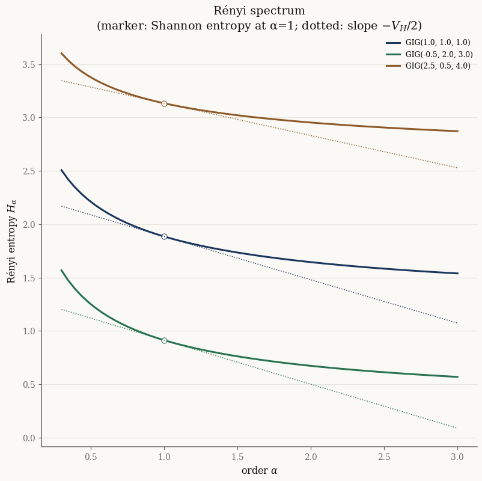
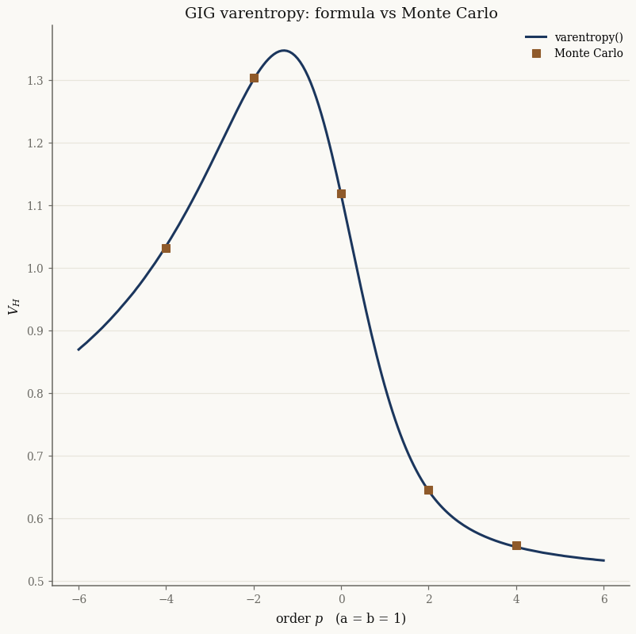
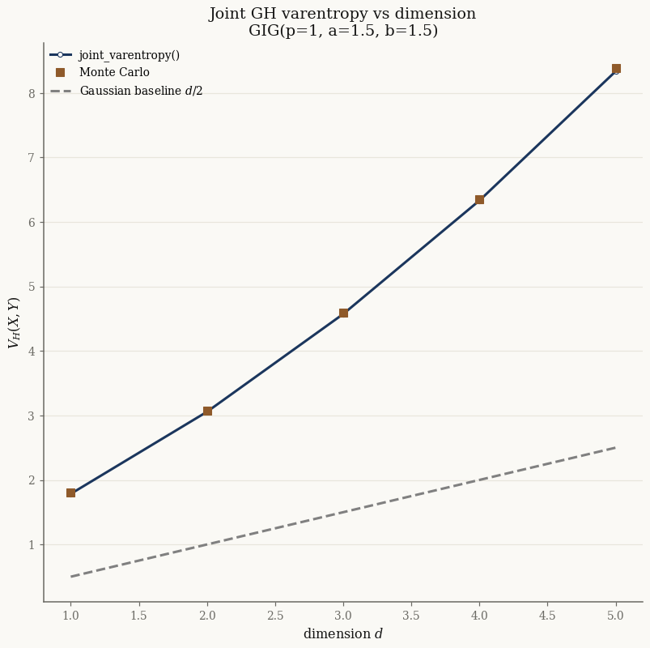
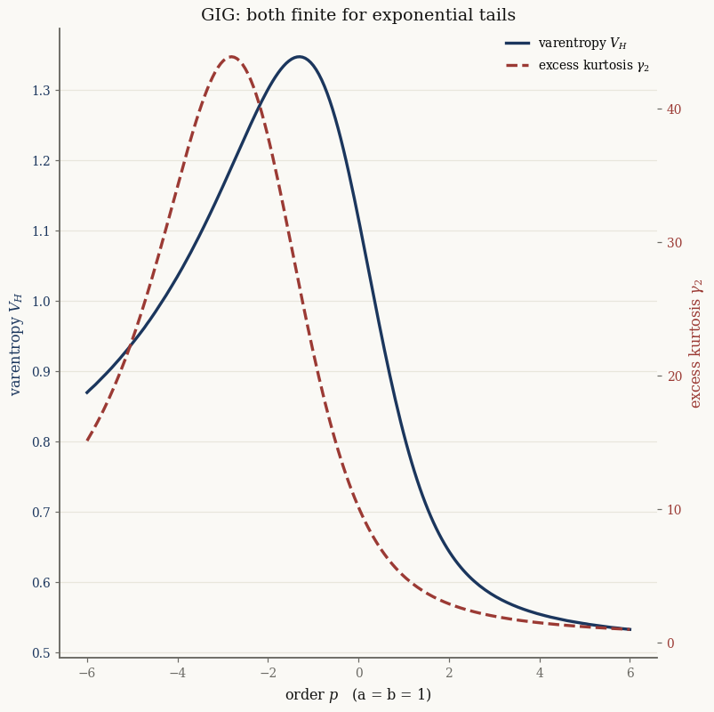
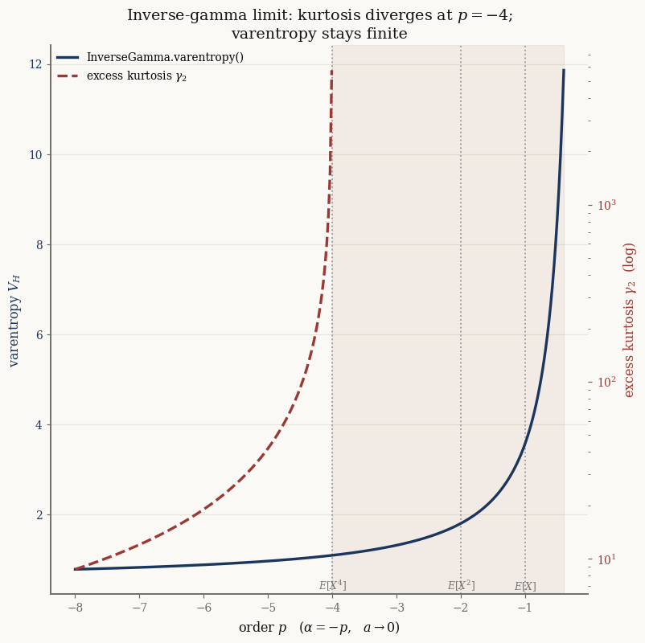
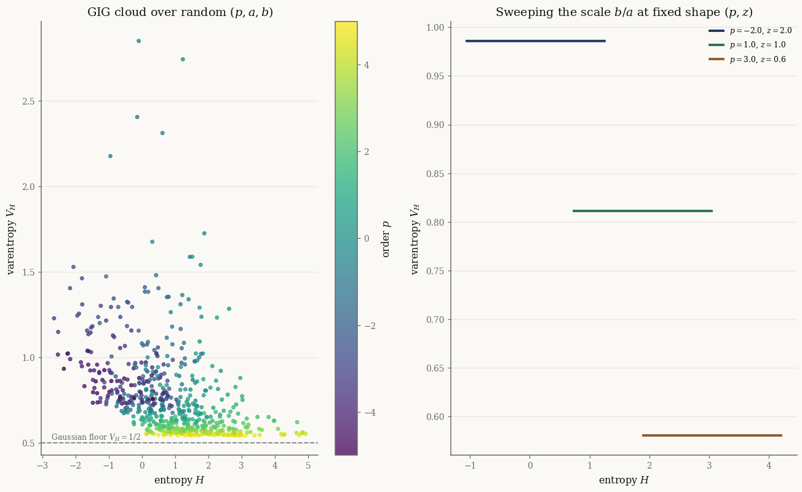
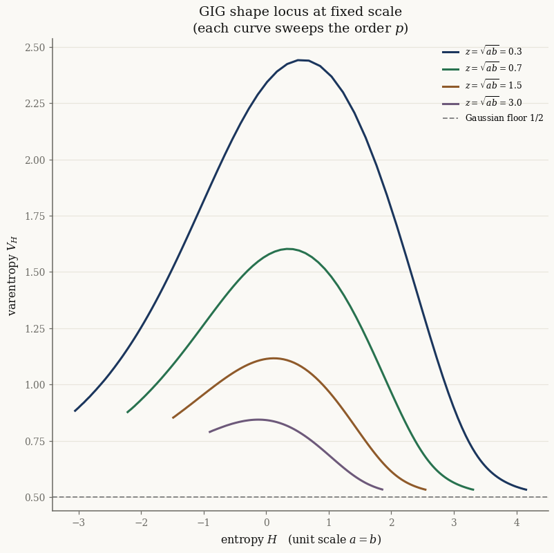
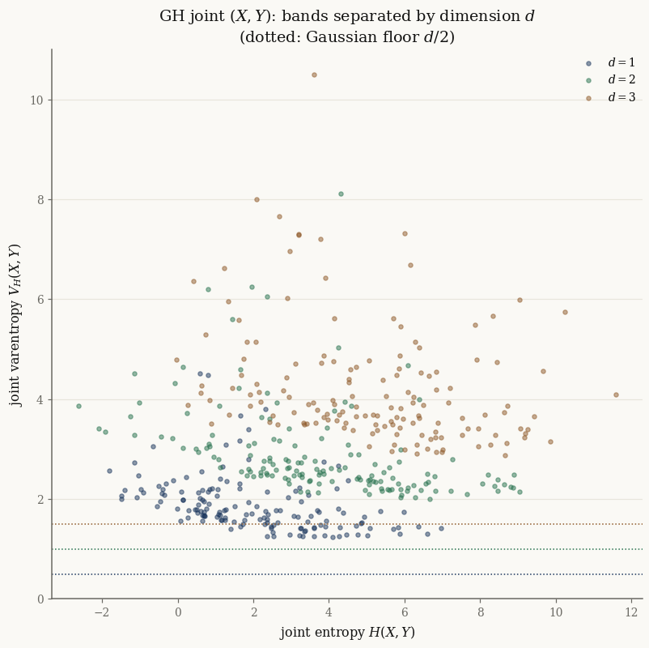

Entropy, varentropy, and fat tails#
Every normix exponential family exposes three information-theoretic quantities:
entropy()— the differential entropy \(H = \mathbb{E}[-\log p(X)]\),varentropy()— the varentropy \(V_H = \operatorname{Var}[-\log p(X)]\),renyi(alpha)— the Rényi entropy \(H_\alpha\) of order \(\alpha\).
All three are generated by the log density-power integral
\(R(\alpha) = \log\int p(x)^\alpha\,\mu(dx)\), exposed as log_density_power(alpha):
\(H = -R'(1)\), \(V_H = R''(1)\), and \(H_\alpha = R(\alpha)/(1-\alpha)\). For an
exponential family with base measure constant on its support,
\(R(\alpha) = (\alpha-1)b_0 + \psi(\alpha\theta) - \alpha\psi(\theta)\), so the
methods are just automatic differentiation of the log-partition \(\psi\) along the
scaling ray \(\alpha\theta\). See Entropy, Varentropy, and Rényi Entropy for the derivations.
This tutorial validates the formulas against Monte Carlo, uses JAX to confirm the Rényi ↔ varentropy relationship, and shows why varentropy is an attractive measure of tail-heaviness — it stays finite where the kurtosis diverges.
import jax
jax.config.update("jax_enable_x64", True)
import jax.numpy as jnp
import numpy as np
import matplotlib.pyplot as plt
from scipy import stats
from normix import (
Gamma, InverseGamma, InverseGaussian, GIG, MultivariateNormal,
GeneralizedHyperbolic,
)
from normix.utils.bessel import log_kv
from normix.utils.plotting import set_theme, FIG_W, FIG_H
set_theme()
np.set_printoptions(precision=6, suppress=True)
colors = plt.rcParams["axes.prop_cycle"].by_key()["color"]
The three quantities#
The entropy of the tractable exponential families matches SciPy’s closed forms, and the Gaussian varentropy is exactly \(d/2\) regardless of \(\mu\) and \(\Sigma\):
g = Gamma(alpha=2.0, beta=3.0)
print(f"Gamma(2, 3): entropy = {float(g.entropy()):.6f} "
f"(scipy {stats.gamma(a=2.0, scale=1/3.0).entropy():.6f})")
print(f" varentropy = {float(g.varentropy()):.6f}")
print(f" renyi(2) = {float(g.renyi(2.0)):.6f}, "
f"renyi(1) = entropy = {float(g.renyi(1.0)):.6f}")
mvn = MultivariateNormal.from_classical(
jnp.array([0.5, -1.0, 2.0]),
jnp.array([[2.0, 0.3, -0.2], [0.3, 1.0, 0.1], [-0.2, 0.1, 1.5]]))
print(f"\nMultivariateNormal d=3: varentropy = {float(mvn.varentropy()):.6f} "
f"(exactly d/2 = 1.5)")
Gamma(2, 3): entropy = 0.478603 (scipy 0.478603)
varentropy = 0.644934
renyi(2) = 0.287682, renyi(1) = entropy = 0.478603
MultivariateNormal d=3: varentropy = 1.500000 (exactly d/2 = 1.5)
InverseGaussian has a non-constant base measure, so normix evaluates its
information measures on the exact GIG(-1/2, ...) embedding — transparently:
ig = InverseGaussian(mu=1.5, lam=2.0)
print(f"InverseGaussian: entropy = {float(ig.entropy()):.6f} "
f"(scipy {stats.invgauss(mu=1.5/2.0, scale=2.0).entropy():.6f})")
print(f" varentropy = {float(ig.varentropy()):.6f} "
f"(= GIG embedding {float(ig.to_gig().varentropy()):.6f})")
InverseGaussian: entropy = 1.248139 (scipy 1.248139)
varentropy = 1.082825 (= GIG embedding 1.082825)
Varentropy is the second derivative of the Rényi generator#
Because \(V_H = R''(1)\) and \(H_\alpha = H - \tfrac12 V_H(\alpha-1) + \mathcal{O}((\alpha-1)^2)\),
JAX can recover the varentropy from log_density_power by autodiff, and from the
slope of the Rényi spectrum. All three agree:
for dist, name in [(GIG(p=-0.5, a=2.0, b=3.0), "GIG(-0.5, 2, 3)"),
(Gamma(alpha=2.0, beta=3.0), "Gamma(2, 3)")]:
R = dist.log_density_power
H_autodiff = float(-jax.grad(R)(jnp.asarray(1.0)))
V_autodiff = float(jax.grad(jax.grad(R))(jnp.asarray(1.0)))
# slope of the Rényi entropy at alpha = 1
eps = 1e-3
slope = (float(dist.renyi(1 + eps)) - float(dist.renyi(1 - eps))) / (2 * eps)
print(f"{name}")
print(f" entropy(): {float(dist.entropy()):.6f} -R'(1): {H_autodiff:.6f}")
print(f" varentropy(): {float(dist.varentropy()):.6f} R''(1): {V_autodiff:.6f} "
f"-2·H_α'(1): {-2*slope:.6f}")
GIG(-0.5, 2, 3)
entropy(): 0.913535 -R'(1): 0.913535
varentropy(): 0.824629 R''(1): 0.824629 -2·H_α'(1): 0.824625
Gamma(2, 3)
entropy(): 0.478603 -R'(1): 0.478603
varentropy(): 0.644934 R''(1): 0.644934 -2·H_α'(1): 0.644934
The Rényi spectrum makes the relationship visual: every curve passes through the Shannon entropy at \(\alpha=1\) with slope \(-V_H/2\).
alphas = jnp.linspace(0.3, 3.0, 60)
fig, ax = plt.subplots(figsize=(FIG_W * 0.62, FIG_H))
for i, (p, a, b) in enumerate([(1.0, 1.0, 1.0), (-0.5, 2.0, 3.0), (2.5, 0.5, 4.0)]):
d = GIG(p=p, a=a, b=b)
H_a = np.asarray(jax.vmap(d.renyi)(alphas))
H1, VH = float(d.entropy()), float(d.varentropy())
a_np = np.asarray(alphas)
ax.plot(a_np, H_a, color=colors[i], lw=2, label=f"GIG({p}, {a}, {b})")
ax.plot([1.0], [H1], "o", color=colors[i], ms=6, mfc="white")
ax.plot(a_np, H1 - 0.5 * VH * (a_np - 1.0), color=colors[i], lw=1, ls=":")
ax.set(xlabel=r"order $\alpha$", ylabel=r"Rényi entropy $H_\alpha$",
title="Rényi spectrum\n(marker: Shannon entropy at α=1; dotted: slope $-V_H/2$)")
ax.legend(fontsize=8)
plt.tight_layout()
plt.show()

GIG varentropy vs Monte Carlo#
varentropy() routes autodiff through the accurate log_kv custom JVP, so it
matches an independent Monte Carlo estimate across the parameter range. Here we
vary the order \(p\) at \(a=b=1\):
def gig_varentropy_mc(p, a, b, n=400_000, seed=0):
b_sp, scale = float(np.sqrt(a * b)), float(np.sqrt(b / a))
Y = stats.geninvgauss.rvs(p=p, b=b_sp, scale=scale, size=n, random_state=seed)
logf = stats.geninvgauss.logpdf(Y, p=p, b=b_sp, scale=scale)
return float(np.var(-logf))
p_grid = jnp.linspace(-6.0, 6.0, 200)
vh_curve = jax.vmap(lambda p: GIG(p=p, a=1.0, b=1.0).varentropy())(p_grid)
p_mc = np.array([-4.0, -2.0, 0.0, 2.0, 4.0])
vh_mc = [gig_varentropy_mc(p, 1.0, 1.0) for p in p_mc]
fig, ax = plt.subplots(figsize=(FIG_W * 0.62, FIG_H))
ax.plot(np.asarray(p_grid), np.asarray(vh_curve), color=colors[0], lw=2,
label="varentropy()")
ax.plot(p_mc, vh_mc, "s", color=colors[2], ms=7, label="Monte Carlo")
ax.set(xlabel="order $p$ (a = b = 1)", ylabel="$V_H$",
title="GIG varentropy: formula vs Monte Carlo")
ax.legend()
plt.tight_layout()
plt.show()

Joint varentropy of the GH family#
For the normal variance-mean mixture \(X\mid Y\sim\mathcal N_d(\mu+\gamma Y,\Sigma Y)\),
\(Y\sim\mathrm{GIG}\), the marginal varentropy of \(X\) has no closed form, but the
joint \((X,Y)\) does: joint_varentropy() returns
\(V_H(X,Y) = d/2 + (L_d^2 - L_d)\log K_p(\sqrt{ab})\). It depends on \(\mu,\gamma,\Sigma\)
only through the dimension \(d\):
def joint_varentropy_mc(model, n=300_000, seed=0):
j = model._joint
X, Y = j.rvs(n, seed=seed)
return float(np.var(-np.asarray(jax.vmap(j.log_prob_joint)(X, Y))))
ds = np.arange(1, 6)
vh_joint, vh_joint_mc = [], []
for d in ds:
gh = GeneralizedHyperbolic.from_classical(
mu=jnp.zeros(d), gamma=0.3 * jnp.ones(d), sigma=jnp.eye(d),
p=1.0, a=1.5, b=1.5)
vh_joint.append(float(gh.joint_varentropy()))
vh_joint_mc.append(joint_varentropy_mc(gh))
fig, ax = plt.subplots(figsize=(FIG_W * 0.62, FIG_H))
ax.plot(ds, vh_joint, "-o", color=colors[0], lw=2, mfc="white",
label="joint_varentropy()")
ax.plot(ds, vh_joint_mc, "s", color=colors[2], ms=7, label="Monte Carlo")
ax.plot(ds, ds / 2.0, "--", color="0.5", label="Gaussian baseline $d/2$")
ax.set(xlabel="dimension $d$", ylabel="$V_H(X, Y)$",
title="Joint GH varentropy vs dimension\nGIG(p=1, a=1.5, b=1.5)")
ax.legend()
plt.tight_layout()
plt.show()

Independence from the Gaussian block is exact, as the formula predicts:
base = dict(p=-0.5, a=2.0, b=3.0)
for mu, gamma, sig in [([0.0, 0.0], [0.0, 0.0], [[1.0, 0.0], [0.0, 1.0]]),
([5.0, -3.0], [2.0, 1.0], [[4.0, 1.5], [1.5, 2.0]])]:
gh = GeneralizedHyperbolic.from_classical(
mu=jnp.array(mu), gamma=jnp.array(gamma), sigma=jnp.array(sig), **base)
print(f"mu={mu}, gamma={gamma}: joint_varentropy = "
f"{float(gh.joint_varentropy()):.10f}")
mu=[0.0, 0.0], gamma=[0.0, 0.0]: joint_varentropy = 2.9024204306
mu=[5.0, -3.0], gamma=[2.0, 1.0]: joint_varentropy = 2.9024204306
Varentropy vs kurtosis as a fat-tailedness measure#
Kurtosis needs a finite fourth moment; varentropy needs only \(\log p(X)\in L^2\). The GIG is a clean testbed. For genuine GIG parameters (\(a,b>0\)) the tails are exponential, so both diagnostics are finite and track the order \(p\):
def gig_excess_kurtosis(p, a, b):
"""Excess kurtosis from the GIG raw moments E[Y^k] = (b/a)^{k/2} K_{p+k}(z)/K_p(z)."""
z = jnp.sqrt(a * b)
def raw(k):
return jnp.exp(0.5 * k * (jnp.log(b) - jnp.log(a))
+ log_kv(p + k, z) - log_kv(p, z))
m1, m2, m3, m4 = raw(1), raw(2), raw(3), raw(4)
var = m2 - m1**2
mu4 = m4 - 4 * m1 * m3 + 6 * m1**2 * m2 - 3 * m1**4
return mu4 / var**2 - 3.0
p_grid = jnp.linspace(-6.0, 6.0, 200)
vh = np.asarray(jax.vmap(lambda p: GIG(p=p, a=1.0, b=1.0).varentropy())(p_grid))
ek = np.asarray(jax.vmap(lambda p: gig_excess_kurtosis(p, 1.0, 1.0))(p_grid))
p_grid = np.asarray(p_grid)
fig, ax1 = plt.subplots(figsize=(FIG_W * 0.62, FIG_H))
ax2 = ax1.twinx(); ax2.grid(False)
l1, = ax1.plot(p_grid, vh, color=colors[0], lw=2.2, label="varentropy $V_H$")
l2, = ax2.plot(p_grid, ek, color=colors[5], lw=2.2, ls="--",
label="excess kurtosis $\\gamma_2$")
ax1.set_xlabel("order $p$ (a = b = 1)")
ax1.set_ylabel("varentropy $V_H$", color=colors[0])
ax2.set_ylabel("excess kurtosis $\\gamma_2$", color=colors[5])
ax1.tick_params(axis="y", labelcolor=colors[0])
ax2.tick_params(axis="y", labelcolor=colors[5])
ax1.set_title("GIG: both finite for exponential tails")
ax1.legend(handles=[l1, l2], loc="upper right", fontsize=9)
plt.tight_layout()
plt.show()

The contrast appears in the inverse-gamma limit (\(a\to0\), \(p<0\)), where the
right tail becomes a power law with index \(\alpha=-p\) and
\(X\to\mathrm{InvGamma}(\alpha, b/2)\). The excess kurtosis
\(\gamma_2 = 6(5\alpha-11)/((\alpha-3)(\alpha-4))\) diverges at \(\alpha=4\) (\(p=-4\))
and is undefined for \(-4\le p<0\), but InverseGamma.varentropy() stays finite and
smooth — even past the mean (\(p=-1\)) and variance (\(p=-2\)) boundaries:
p_neg = np.linspace(-8.0, -0.4, 300)
alpha = -p_neg
vh_ig = np.asarray(jax.vmap(
lambda a: InverseGamma(alpha=a, beta=0.5).varentropy())(jnp.asarray(alpha)))
ek_ig = np.where(alpha > 4.0,
6.0 * (5 * alpha - 11.0) / ((alpha - 3.0) * (alpha - 4.0)), np.nan)
fig, ax1 = plt.subplots(figsize=(FIG_W * 0.62, FIG_H))
ax2 = ax1.twinx(); ax2.grid(False); ax2.set_yscale("log")
ax1.axvspan(-4.0, p_neg.max(), color=colors[5], alpha=0.08)
for pb, lbl in [(-4.0, "$E[X^4]$"), (-2.0, "$E[X^2]$"), (-1.0, "$E[X]$")]:
ax1.axvline(pb, color="0.6", ls=":", lw=1.2)
ax1.annotate(lbl, xy=(pb, 0.0), xycoords=("data", "axes fraction"),
xytext=(0, 4), textcoords="offset points",
ha="center", fontsize=8, color="0.45")
l1, = ax1.plot(p_neg, vh_ig, color=colors[0], lw=2.2,
label="InverseGamma.varentropy()")
l2, = ax2.plot(p_neg, ek_ig, color=colors[5], lw=2.2, ls="--",
label="excess kurtosis $\\gamma_2$")
ax1.set_xlabel(r"order $p$ ($\alpha = -p$, $a\to 0$)")
ax1.set_ylabel("varentropy $V_H$", color=colors[0])
ax2.set_ylabel("excess kurtosis $\\gamma_2$ (log)", color=colors[5])
ax1.tick_params(axis="y", labelcolor=colors[0])
ax2.tick_params(axis="y", labelcolor=colors[5])
ax1.set_title("Inverse-gamma limit: kurtosis diverges at $p=-4$;\n"
"varentropy stays finite")
ax1.legend(handles=[l1, l2], loc="upper left", fontsize=9)
plt.tight_layout()
plt.show()

Is there an entropy–varentropy frontier?#
Mean–variance portfolio theory plots expected return against variance and hunts for an efficient frontier — the smallest variance attainable at each level of return. It is tempting to ask the same of the entropy–varentropy plane: is there a curve bounding the smallest varentropy at each entropy? For the GIG the answer is no, and the reason is structural. Compare the closed forms (10) and (9):
The varentropy depends only on the shape \((p, z)\); the scale ratio \(b/a\) enters the entropy through the additive \(\tfrac12\log(b/a)\) term and is invisible to the varentropy. So we can slide the entropy anywhere along the real line while holding the varentropy fixed — the achievable region is a horizontal band, not a region with a sloping efficient boundary:
def gig_entropy(p, a, b):
return GIG(p=p, a=a, b=b).entropy()
def gig_varentropy(p, a, b):
return GIG(p=p, a=a, b=b).varentropy()
rng = np.random.default_rng(0)
n = 600
p_s = rng.uniform(-5.0, 5.0, n)
z_s = rng.uniform(0.2, 5.0, n) # shape z = √(ab)
ratio_s = np.exp(rng.uniform(np.log(0.1), np.log(10.0), n)) # scale b/a
a_s, b_s = z_s / np.sqrt(ratio_s), z_s * np.sqrt(ratio_s)
H = np.asarray(jax.vmap(gig_entropy)(jnp.array(p_s), jnp.array(a_s), jnp.array(b_s)))
V = np.asarray(jax.vmap(gig_varentropy)(jnp.array(p_s), jnp.array(a_s), jnp.array(b_s)))
fig, (axL, axR) = plt.subplots(1, 2, figsize=(FIG_W, FIG_H))
sc = axL.scatter(H, V, c=p_s, cmap="viridis", s=14, alpha=0.75)
fig.colorbar(sc, ax=axL, label="order $p$")
axL.axhline(0.5, color="0.5", ls="--", lw=1.2)
axL.text(0.02, 0.5, " Gaussian floor $V_H=1/2$",
transform=axL.get_yaxis_transform(),
va="bottom", ha="left", fontsize=8, color="0.4")
axL.set(xlabel="entropy $H$", ylabel="varentropy $V_H$",
title="GIG cloud over random $(p, a, b)$")
ratios = np.linspace(0.1, 10.0, 40)
for i, (p0, z0) in enumerate([(-2.0, 2.0), (1.0, 1.0), (3.0, 0.6)]):
aa, bb = z0 / np.sqrt(ratios), z0 * np.sqrt(ratios)
hh = np.asarray(jax.vmap(gig_entropy)(jnp.full(40, p0), jnp.array(aa), jnp.array(bb)))
vv = np.asarray(jax.vmap(gig_varentropy)(jnp.full(40, p0), jnp.array(aa), jnp.array(bb)))
axR.plot(hh, vv, "-", color=colors[i], lw=2.5, label=f"$p={p0}$, $z={z0}$")
axR.set(xlabel="entropy $H$", ylabel="varentropy $V_H$",
title="Sweeping the scale $b/a$ at fixed shape $(p, z)$")
axR.legend(fontsize=8)
plt.tight_layout()
plt.show()

The only genuine boundary is a horizontal floor: as \(z = \sqrt{ab}\to\infty\) the GIG concentrates and becomes asymptotically Gaussian, so \(V_H\to\tfrac12\) — the same \(d/2\) value the multivariate normal attains for every \(\mu,\Sigma\). Removing the scale degree of freedom (fixing \(a = b\)) exposes the real object: a shape locus in which the order \(p\) traces one curve per scale \(z\).
p_grid = jnp.linspace(-6.0, 6.0, 120)
fig, ax = plt.subplots(figsize=(FIG_W * 0.62, FIG_H))
for i, z0 in enumerate([0.3, 0.7, 1.5, 3.0]):
hh = np.asarray(jax.vmap(lambda p: gig_entropy(p, z0, z0))(p_grid))
vv = np.asarray(jax.vmap(lambda p: gig_varentropy(p, z0, z0))(p_grid))
ax.plot(hh, vv, color=colors[i], lw=2, label=f"$z=\\sqrt{{ab}}={z0}$")
ax.axhline(0.5, color="0.5", ls="--", lw=1.2, label="Gaussian floor $1/2$")
ax.set(xlabel="entropy $H$ (unit scale $a = b$)", ylabel="varentropy $V_H$",
title="GIG shape locus at fixed scale\n(each curve sweeps the order $p$)")
ax.legend(fontsize=8)
plt.tight_layout()
plt.show()

Each curve peaks at a moderate \(|p|\) and descends toward the Gaussian floor as the distribution either concentrates (large \(z\)) or degenerates toward its Gamma/inverse-Gamma boundaries (large \(|p|\)). Smaller scales \(z\) admit substantially larger varentropy — the tail is thinner in the argument of \(K_p\), so the surprisal fluctuates more.
The same picture carries over to the GH joint \((X, Y)\), where the Gaussian block contributes a rigid \(d/2\) (formula (12)). The location and scale parameters \(\mu,\gamma,\Sigma\) translate the joint entropy but leave the joint varentropy untouched, so raising the dimension \(d\) simply lifts an entire band by \(d/2\) — again with no sloping frontier, only stacked floors:
def gh_joint_HV(p, a, b, d, gamma=0.3):
gh = GeneralizedHyperbolic.from_classical(
mu=jnp.zeros(d), gamma=gamma * jnp.ones(d), sigma=jnp.eye(d), p=p, a=a, b=b)
return gh.joint_entropy(), gh.joint_varentropy()
fig, ax = plt.subplots(figsize=(FIG_W * 0.62, FIG_H))
m = 150
for d in [1, 2, 3]:
p_s = rng.uniform(-4.0, 4.0, m)
z_s = rng.uniform(0.3, 4.0, m)
ratio_s = np.exp(rng.uniform(np.log(0.2), np.log(5.0), m))
a_s, b_s = z_s / np.sqrt(ratio_s), z_s * np.sqrt(ratio_s)
Hd, Vd = jax.vmap(lambda p, a, b: gh_joint_HV(p, a, b, d))(
jnp.array(p_s), jnp.array(a_s), jnp.array(b_s))
ax.scatter(np.asarray(Hd), np.asarray(Vd), s=12, alpha=0.5,
color=colors[d - 1], label=f"$d={d}$")
ax.axhline(d / 2.0, color=colors[d - 1], ls=":", lw=1.0)
ax.set(xlabel="joint entropy $H(X, Y)$", ylabel="joint varentropy $V_H(X, Y)$",
title="GH joint $(X, Y)$: bands separated by dimension $d$\n"
"(dotted: Gaussian floor $d/2$)")
ax.legend()
plt.tight_layout()
plt.show()

Takeaways#
entropy(),varentropy(),renyi(alpha), andlog_density_power(alpha)are available on every exponential family; the marginal mixtures additionally exposejoint_entropy(),joint_varentropy(), andjoint_renyi(alpha)for the tractable joint \((X, Y)\).All are exact and autodiff-friendly —
varentropy()flows through the accuratelog_kvderivative, matching Monte Carlo across the parameter range.The joint GH varentropy is \(d/2 + (L_d^2 - L_d)\log K_p(\sqrt{ab})\), independent of \(\mu,\gamma,\Sigma\).
Varentropy is a fat-tailedness diagnostic that survives where kurtosis fails: in the heavy-tailed inverse-gamma limit it remains finite long after the fourth moment — and even the mean — has ceased to exist.
There is no entropy–varentropy frontier: varentropy is a location/scale invariant that depends only on the shape \((p, z)\), so the achievable region is a horizontal band floored at the Gaussian value \(d/2\) (\(1/2\) for the GIG). The informative object is the shape locus obtained by fixing the scale.
Next: the {doc}`../../theory/varentropy` derivations, or revisit
{doc}`../distributions/02_gig` for the GIG tail behavior.